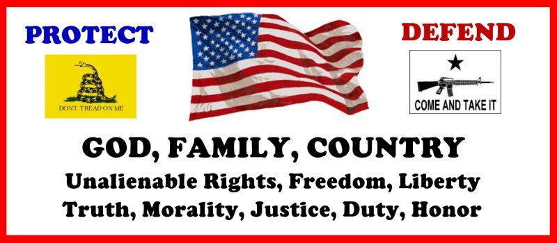
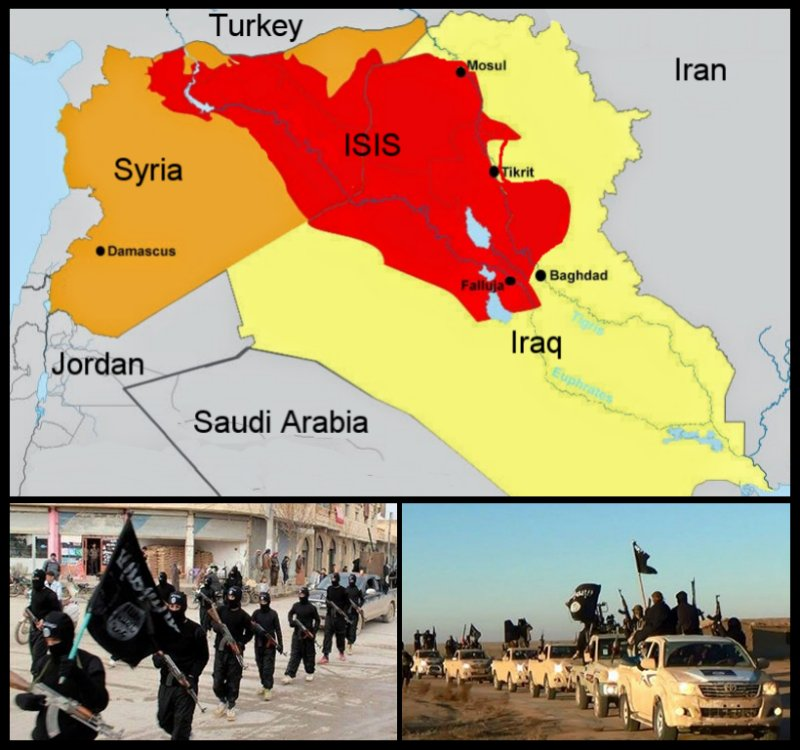
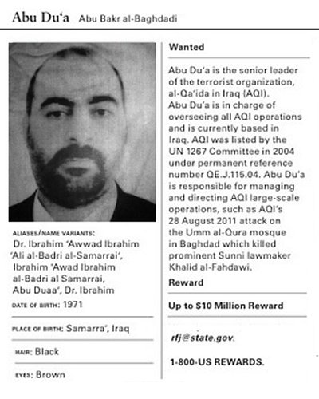
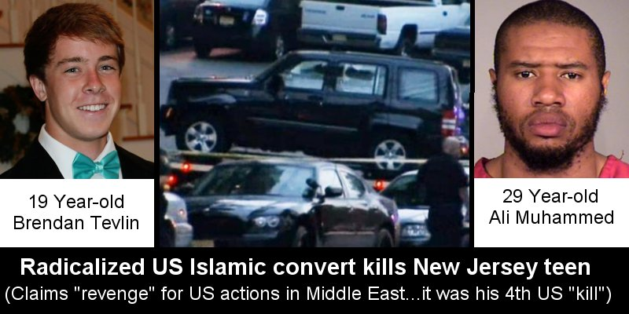
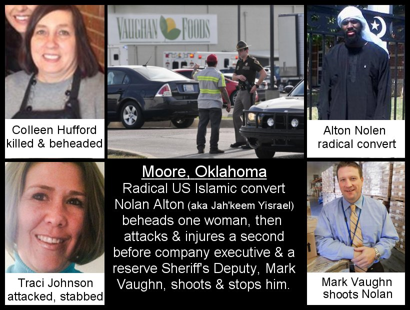
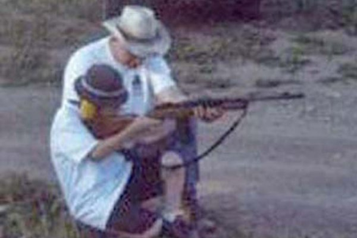
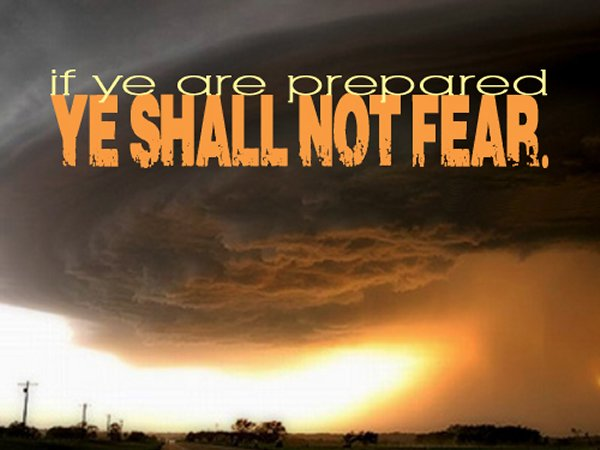
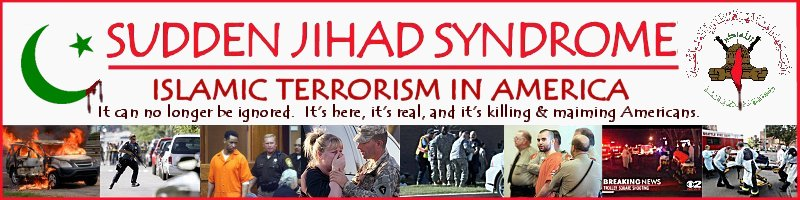

|
 Given the events of the day and the dangers they represent, I thought I would share some advise/instruction/tips/information with my loved ones, and make it available for anyone who may be interested. It is a bit long, but important nonetheless. This message is not meant to alarm or cause undue angst or panic. But, as a husband, a father, and a grandfather...as well as a friend and nieghboor...it is meant to inform those close to me regarding important information so they can remain vigilant as they go about their own life, maximizing their ability to stay safe and secure as individuals, families, and American citizens in the current events.
 All of us are aware (or should be aware) of recent events. Some of the critical events include:
These events tell us that these radical enemies intend to bring their horrific, hateful ideology and behavior to the United States. Their leader, Abu Bakr al-Baghdadi, fought with Al Queda in Iraq. He was was captured in 2004 and, according to the forrmer commander of Camp Bucca, held there in prison in US custody from 2005 until 2009. He was handed over to the Iraqis and later released by them as the Obama administration drew down US forces in Iraq in 2009. When leaving US custody, he told his former captors, "I will see you in New York." He has promised to plant the black flag of Islam on the lawn of the White House. (See: http://www.telegraph.co.uk/news/worldnews/ - The Iraq Jihadist behind ISIS and how America let him go)
 In their efforts to bring their fighting and terror to America, they have encouraged disaffected US citizens to convert, become radicalized, and then commit Jihad in America. They believe they can terrorize the citizens of this nation (and that means each of you), and damage or immobilize the nation as a result.
  All They adhere to a radical Islamic dogma, Sharia Law, which is in reality a political ideology that is tyranical, controls all aspects of the life of those who are ruled by it, and requires you too either convert to it, pay a tax as an unbeliever 2nd class citizen, or die.
In facing all of this as US citizens, it is also critical for us to understand a few things regarding these circumstances.
The first defense against such enemies is to remain calm, remain perceptive, and to be observant of conditions and events that go on around you each day where you work and live. The danger, though perhaps low in probablity, is nonetheless real, and would be extremely dangerous to you and your loved ones if it ever transpires near you. The second defense for you personally, should anything like this occur, is to be armed and understand how to effectively use a firearm for self defense. Plain and simple. A radical Jihadist is not going to wait for you to call 911 and wait for help to arrive. They will attack you quickly, long before help can come, and move on to other victims. In such circumstances you must protect yourself and those around you. It is your constitutional right as an American to keep and ber arms. Arm yourself. Look into local conceal carry laws and get a license. Keep a firearm in your home. Train and practise in how to use it. In Moore, Okalahoma last weekend, the thing that stopped the radical jihadist killer (and that is exactly what he was no matter what you hear on MSNBC), was an armed citizen who rushed to his vehicle and got a weapon, came back in, and shot the killer as he was attempting to murder a second victim. Life, perhaps many lives, were saved. So, my advise is to keep firearms at home, and carry a firearm with you for self protection. This means you must learn how to use it, and I must add, in all seriousness, teach your children above the age of ten to twelve how to use them...and also to respect them on their life. I can help any of my family with this...and would be happy to do so.
 Understanding these things and behaving accordingly will ensure that you are in the best position to report suspicious activities that you may see or notice...and to protect yourself if, God forbid, these animals attack you or your family, friends, or neighbors. With this in mind, as go through your day, make use of the tools that have been provided to you as an American citizen:
Finally, if you get into trouble in this fashion, call me. Unless I myself am already ded and gone, or physically incapacitated, I will come...wherever you may be...whatever time it is...whatever circumstance...however long it takes. Please understand. This not is not meant to drive any of you into a mindset that is itself extreme, obsessed, or prone to ostercize or abandon society. Any of those would actually increase the danger to you and your loved ones. This message is meant to cause you to think, to use your commonsn sense, intellect, critical thinking, and the resources available to you to be in a position to be as safe and secure as possible in the unlikely event you ever face this. It is my desitre and hope and prayer that you never will. But the threat is real and dangerous, so being prepared is prudent. It has been said, "If ye are prepared, ye shall not fear."
 Those are true words, whether economic, physical, moral, or spiritual. Finally, take courage. We still live in the freest and most prosperous place on earth. Those are blessings, blessings from God. The founders of this nation, despite whatever other failings, we men of faith. They trusted God to see them through. We can too. But with such blessings comes responsibility and accountability. I could not fulfill mine to my sweetheart, my children and their spouses, and my grandchildren...let alone my friends and neighbors...without doing all I can to help them remain safe. Love you!
Papa, Dad...Jeff
From 2002 until 2009, I kept track of so-called "Lone wolf," Joihad attackers, something I called
 Sudden Jihad Syndrome in America It seems like it is now escalating. As I said, take courage and have faith. ...here's one last note for you regarding some of this. Rehgarding the radicalized US convert to Islam who beheaded the woman in Moore, Okalhoma, the Islamic Council of Oklahoma has stated that Alton Nolen, who went by his Muslim name, Jah’Keem Yisrael, after converting, is “not known to any of the leadership in Oklahoma mosques.” But Alton's Facebook page shows several photos of him interacting with other members at “the Islamic Mosque in Oklahoma City.” In additrion, Breibart News now is reporting that Suhaib Webb, an Imam with ties to former Al Qaeda mastermind Anwar al-Awlaki, was also previously the leader of the Islamic Society of Greater Oklahoma City...which is where Alton Nolen attended. This INman Webb now serves as the leader of the sister organization to the mosque attended by Boston Marathon bombers Dzhokhar and Tamerlan Tsarnaev. Apparently, Imam Suhaib Webb has a history of ties to radicalism. FBI surveillance documents show that he was a known confidant of Al Qaeda mastermind al-Awlaki. In fact, just two days before the September 11, 2001 attacks on America, Webb spoke at a fundraiser with al-Awlaki to raise funds for Atlanta-based H. Rap Brown, a man that shot and killed two police officers. The FBI documents also found that “Webb and Awlaki may be associated with the Muslim American Society,” which is a group described by the Investigative Project on Terrorism as being “founded as the United States Chapter of the Muslim Brotherhood.” Sorry...I do not believe in these sorts of coinicidence...no matter how the liberal media tries to spin it. Do you? |
Other links of Interest:
AMERICA AT THE CROSSROADS OF HISTORY
http://www.jeffhead.com/crossroads.htm
HOW MARISM COMES TO AMERICA
http://www.freewebs.com/jeffhead/marxisminamerica.htm
THE OBAMA ADMINISTRATION'S SCANDALS
http://www.jeffhead.com/phonyscandals.htm
THE PROGRESSIVE/LIBERAL TRAIN WRECK
http://www.freewebs.com/jeffhead/trainwreck.htm
FINE ALL-AMERICAN, LIBERTY ORIENTED BOOKS AUTHORED BY JEFF HEAD
 Dragon's Fury - World War Against America and the West: Following great success in the War on Terror, politicians and analysts alike thought that future global conflict was impossible...but they were wrong. Journey into a possible future where Islamic terrorists sharpen their horrific skills & ally with Red China. In such a future, can the U.S. & western civilization survive? |
 The Stand at Klamatjh Falls: How rural western farmers and their supporters stood up to entrenched environmentalism, activist judges, and agencies of the Federal Government in southwestern Oregon...and prevailed. |
BACK TO JEFFHEAD.COM
Copyright © 2014 by Jeff Head, All Rights Reserved